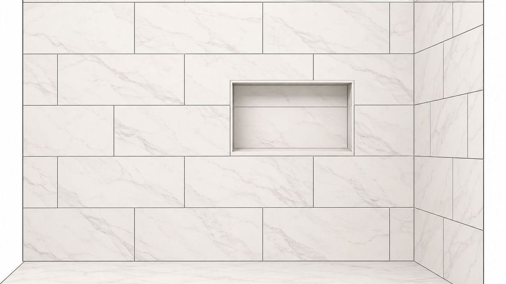

для стен ванной 4 м² хватает 600×600 или 600×1200 мм с швом 2 мм и клеем класса C2TE. Пол — только с коэффициентом трения R10–R11. Плитка и материалы на санузел — 25 000–70 000 руб., работа — 20 000–45 000 руб. Ошибка с форматом на кривой стене даёт «волну» на стыке и перерасход 15–25 % на подрезку.
Формат: 300×600, 600×600 или 600×1200
| Формат | Цена за м² | Плюсы | Минусы |
|---|---|---|---|
| 300×600 мм | 600–1 400 руб. | простая укладка, мало подрезки | много швов, визуально дробит |
| 600×600 мм | 900–2 200 руб. | баланс цены и вида | нужна ровная стена |
| 600×1200 мм | 1 400–3 500 руб. | мало швов, «дорогой» вид | перепад стены больше 3 мм виден |
| Мозаика 100×100 | 2 500–6 000 руб. | повторяет уклоны, акцент | дорогая работа |
Крупный формат требует штукатурки по маякам с перепадом до 2 мм на 2 м. На стене с «волной» 5 мм плитка 600×1200 ложится с зазорами по углам, и клей не спасает.
Поверхность: мат, глянец, сатин, ректификат
| Тип | Уход | Цена | Где уместен |
|---|---|---|---|
| Матовая | простой, не видно разводов | базовая | стены, пол |
| Глянцевая | видны капли и мыльный налёт | базовая | стены вне зоны душа |
| Сатиновая | средний | +10–15 % | стены, компромисс |
| Ректификат (без фаски) | простой, шов 1,5–2 мм | +15–25 % | минимализм, крупный формат |
Ректифицированная плитка имеет ровные кромки и укладывается с швом 1,5–2 мм. Обычная плитка с фаской требует шва 2–3 мм: при 1,5 мм сколы кромки видны как тёмная полоса.
Шов: 1,5, 2 или 3 мм
| Шов | Когда | Затирка | Расход |
|---|---|---|---|
| 1,5 мм | ректификат, ровные кромки | эпоксидная или мелкая цементная | 0,3–0,5 кг/м² |
| 2 мм | стандарт для 600×600 | цементная влагостойкая | 0,5–0,8 кг/м² |
| 3 мм | плитка с фаской, стены с перепадом | цементная | 0,8–1,2 кг/м² |
В душевой зоне затирку берут эпоксидную: она не впитывает воду и не темнеет. Цементная служит 3–5 лет, потом требует замены — 3 000–8 000 руб. за санузел.
Клей и основание
| Параметр | Норма | Комментарий |
|---|---|---|
| Класс клея | C2TE | усиленный, с повышенным сцеплением и минимальным сползанием |
| Расход клея | 4–6 кг/м² | при гребёнке 8–10 мм |
| Перепад стены | до 2 мм на 2 м | для формата 600×1200 |
| Влажность основания | до 5 % | штукатурка сохнет 7–14 дней |
Клей наносят гребёнкой 8–10 мм и обязательно промазывают тыльную сторону плитки крупного формата: без этого контакт 60–70 %, и плитка отходит через 1–2 года.
Раскладка и подрезка

| Схема | Расход | Когда |
|---|---|---|
| Прямая (ряд в ряд) | +5 % | крупный формат, минимализм |
| Со смещением 1/2 | +10 % | плитка «кабанчик», 300×600 |
| Со смещением 1/3 | +12 % | имитация кирпича |
| Диагональная | +15–20 % | небольшие помещения |
Раскладку начинают от целого угла или от центра стены с окном. Подрезка в углах и под потолком — 50–100 мм, меньше 50 мм полоса выглядит как ошибка.
Гидроизоляция и примыкания
Под плитку в душевой зоне обязательна обмазочная гидроизоляция: два слоя цементно-полимерной мастики общей толщиной 1,5–2 мм, с заходом на стены 200 мм и на пол 100 мм за границу душа. Расход — 1,5–2 кг/м², цена 400–900 руб. за 5 кг. Ленту-герметик ставят в углы и вокруг трапа.
| Узел | Решение | Цена |
|---|---|---|
| Угол стена–пол | гидроизоляционная лента 120 мм в 2 слоя мастики | 300–700 руб./п.м |
| Вокруг трапа | фланец трапа + мастика + лента | 1 500–3 500 руб. |
| Выводы труб | манжеты и обмазка вокруг | 200–500 руб./шт. |
| Стык ванны и стены | санитарный силикон по бортику | 500–1 200 руб. |
Если гидроизоляцию пропустить, вода уходит по швам под плитку и появляется на потолке соседей через 6–18 месяцев. Вскрытие и повторная укладка — 30 000–70 000 руб. плюс ремонт у соседей.
Ниша, полки и выводы
Нишу под шампуни делают из влагостойкого ГКЛВ или пеноблока с гидроизоляцией: глубина 90–120 мм, высота 300–400 мм. Готовые ниши из нержавейки стоят 4 000–12 000 руб. и монтируются до укладки плитки.
Выводы смесителя и розетки располагают по центру плитки или на стыке двух плиток — так подрезка вокруг отверстия минимальна. Отверстие сверлят коронкой нужного диаметра с водяным охлаждением, иначе глазурь скалывается.
Светлая или тёмная плитка
| Вариант | Плюсы | Минусы |
|---|---|---|
| Светлая по всем стенам | визуально больше, дешевле | видны швы и разводы |
| Тёмная на полу, светлая на стенах | контраст, скрывает грязь на полу | тёмный пол «давит» в маленькой ванной |
| Акцентная стена за раковиной | выразительно, экономия на плитке | нужен точный расчёт раскладки |
| Тёмная по всем стенам | эффектно в большой ванной | требует света 300–400 лк |
В санузле 3–4 м² тёмную плитку берут не больше чем на одну стену: иначе помещение читается как колодец, а на матовой тёмной поверхности видна каждая капля.
Порядок работ
- Проверить стены правилом 2 м, выровнять штукатуркой при перепаде больше 2 мм.
- Прогрунтовать основание в 2 слоя, дать высохнуть 4–6 часов.
- Разметить раскладку, выставить первый ряд по уровню.
- Нанести клей гребёнкой, уложить плитку, проверить плоскость правилом.
- Выдержать 24 часа, затереть швы через 24–48 часов.
- Загерметизировать углы и примыкания санитарным силиконом.
Смета 2026
| Позиция | Санузел 4 м² | Стоимость |
|---|---|---|
| Плитка на стены 600×600 | 18–20 м² | 18 000–44 000 руб. |
| Плитка на пол R10 | 4,5 м² | 4 000–10 000 руб. |
| Клей C2TE | 120–150 кг | 4 000–9 000 руб. |
| Затирка | 10–15 кг | 1 500–5 000 руб. |
| Работа | 24 м² | 20 000–45 000 руб. |
Итого 47 500–113 000 руб. Крупный формат 600×1200 добавляет 15–25 % к работе: плитку тяжелее поднимать и подрезать.
Ошибки и их цена
| Ошибка | Последствие | Исправление |
|---|---|---|
| Клей только на стену | пустоты, отход плитки | перекладка 20 000–45 000 руб. |
| Шов 1 мм на плите с фаской | тёмные сколы по кромке | замена плитки |
| Гладкая плитка R9 на полу | скользкий пол | замена или противоскользящее покрытие |
| Нет гидроизоляции под плиткой | протечка к соседям | вскрытие 30 000–70 000 руб. |
Чек-лист перед покупкой
- Формат соответствует ровности стен: 600×1200 — только при перепаде до 2 мм.
- Плитка пола с коэффициентом трения R10–R11.
- Шов 2 мм для стандартной, 1,5 мм для ректификата.
- Клей класса C2TE, расчёт 4–6 кг/м².
- Затирка для душевой зоны — эпоксидная.
Частые вопросы
Какой формат плитки лучше для маленькой ванной?
600×600 или 600×1200 в светлых тонах: меньше швов, помещение выглядит крупнее. 300×600 дешевле, но дробит стены.
Нужен ли шов 3 мм?
Только для плитки с выраженной фаской или стен с перепадом. Для ректификата 3 мм — лишняя полоса, достаточно 1,5–2 мм.
Можно ли класть плитку на гипсокартон?
Да, на влагостойкий ГКЛВ с нагрузкой до 25 кг/м². Тяжёлый керамогранит 10 мм требует усиленного каркаса или ГВЛ в два слоя.
Чем затирать швы в душевой?
Эпоксидной затиркой: не впитывает воду, не темнеет, служит 10–15 лет. Цена — 1 500–4 000 руб. за 5 кг.
Сколько сохнет клей перед затиркой?
24 часа при +20 °C, для крупного формата — 48 часов. Затирка по сырому клею даёт высолы и трещины.
Почему плитка «звенит» после укладки?
Пустоты под плиткой из-за клея только на стене или гребёнки 6 мм. Проверяют простукиванием: глухой звук — пустота, плитку перекладывают.